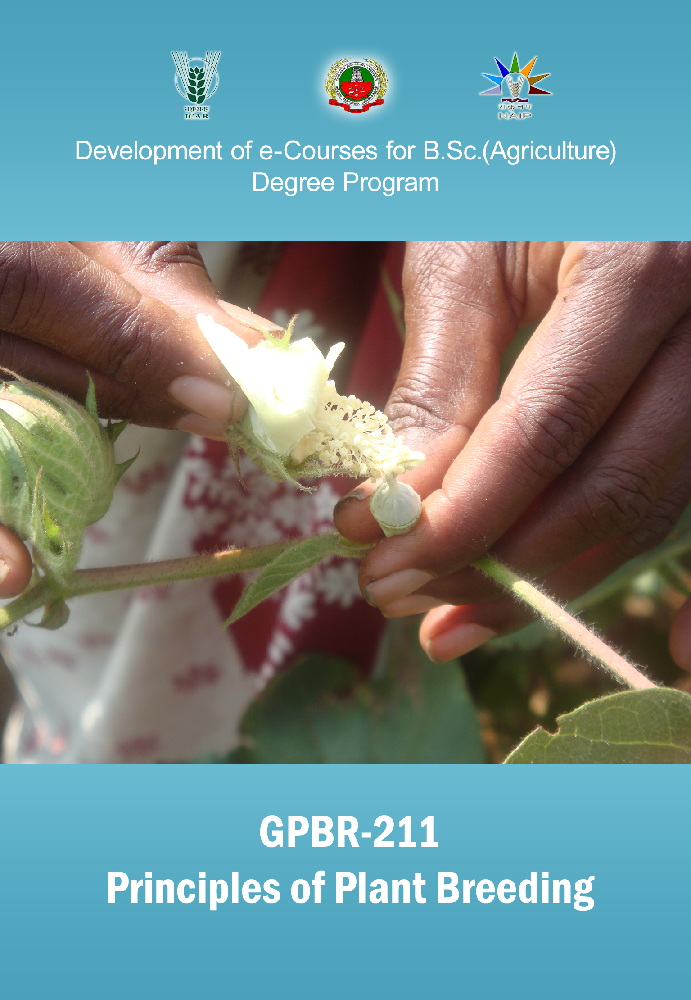

PRINCIPLES OF PLANT BREEDING :: (
GBPR 211
)
(2+1)

Select the lecture topic...
Lec 01 -
Aims and objectives...
Lec 02 -
Modes of Reproduction
Lec 03 -
Apomixis – classification &...
Lec 04 -
Modes of Pollination
Lec 05 -
Classification of plants
Lec 06 -
Botanical description and...
Lec 07 -
Maize - Zea mays (2n - 20)
Lec 08 -
Small Millets
Lec 09 -
Pulses
Lec 10 -
Oil Seeds
Lec 11 -
Cotton
Lec 12-
Emasculation and Pollination...
Lec 13 -
Maize
Lec 14 -
Red gram
Lec 15 -
Sugarcane
Lec 16 -
Methods of breeding...
Lec 17 -
Hybridization – Aims,...
Lec 18 -
Back cross method...
Lec 19
- (1)Incompatibility and male...
Lec 20 -
(2) Incompatibility and male...
Lec 21 -
Heterosis, inbreeding...
Lec 22 -
Population improvement...
Lec 23 -
Hybrids...
Lec 24 -
Clonal selection
Lec 25 -
Hybridization
Lec 26 -
Mutation Breeding
Lec 27 -
Procedure for Mutatuion...
Lec 28 -
Application of Mutatuion...
Lec 29 -
(1) Ploidy breeding
Lec 30 -
(2) Ploidy breeding
Syllabus